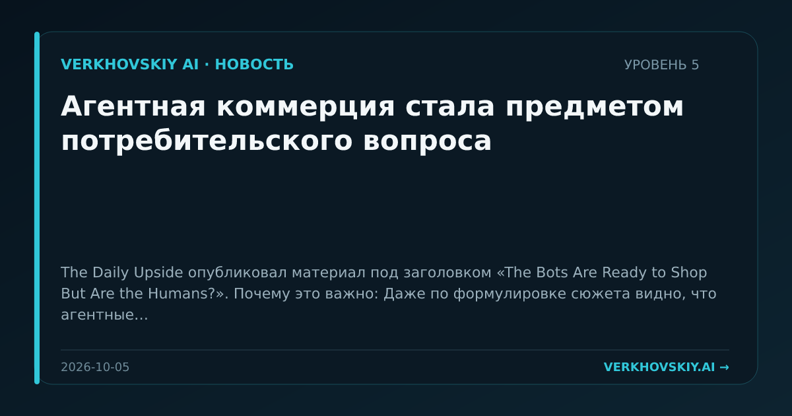

Агентная коммерция стала предметом потребительского вопроса
The Daily Upside опубликовал материал под заголовком «The Bots Are Ready to Shop But Are the Humans?». Почему это важно: Даже по формулировке сюжета видно, что агентные покупки переходят из технической возможности в проблему принятия пользователями. Это ранний сигнал перестройки розничной торговли вокруг посредников-агентов.